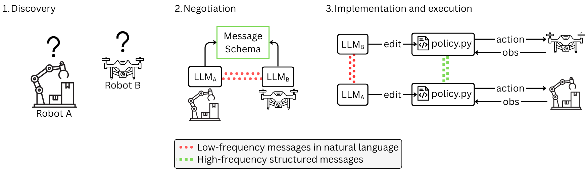
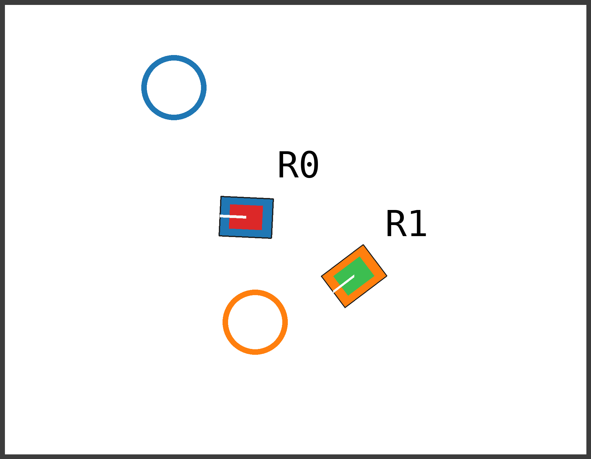
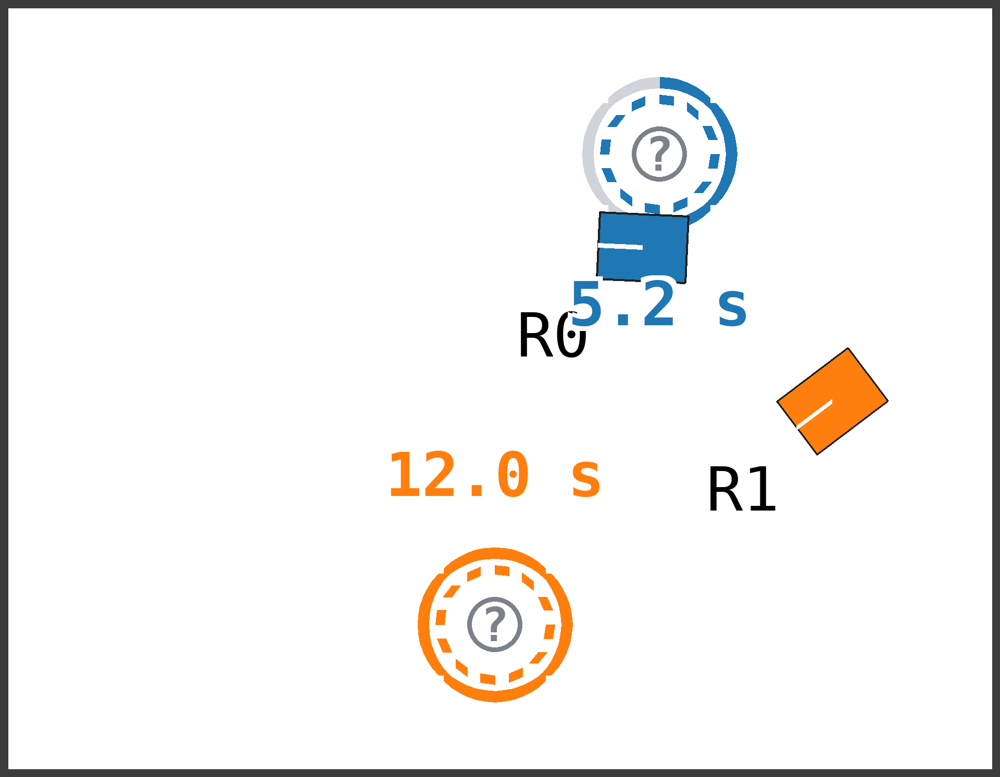
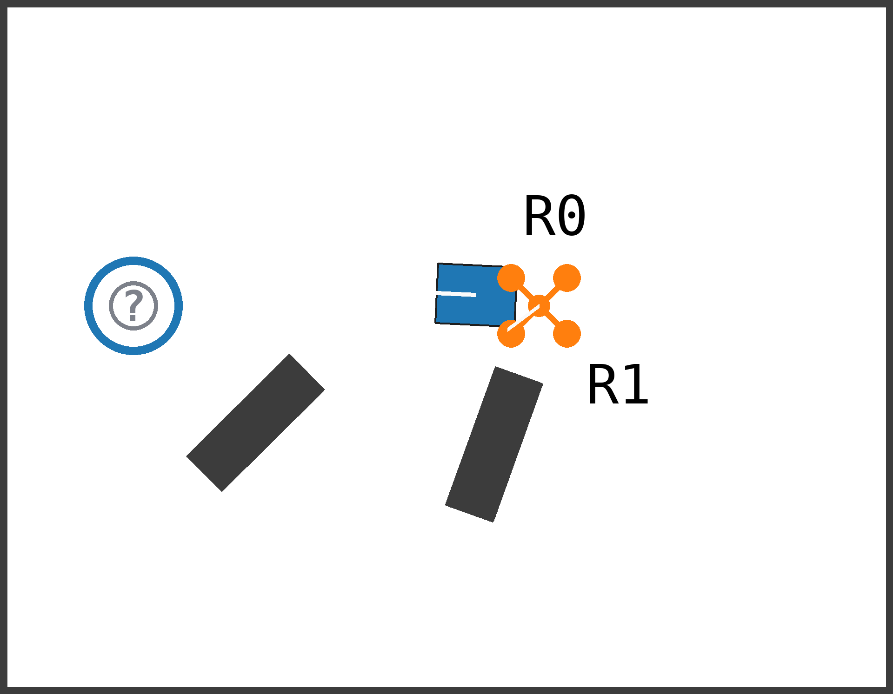
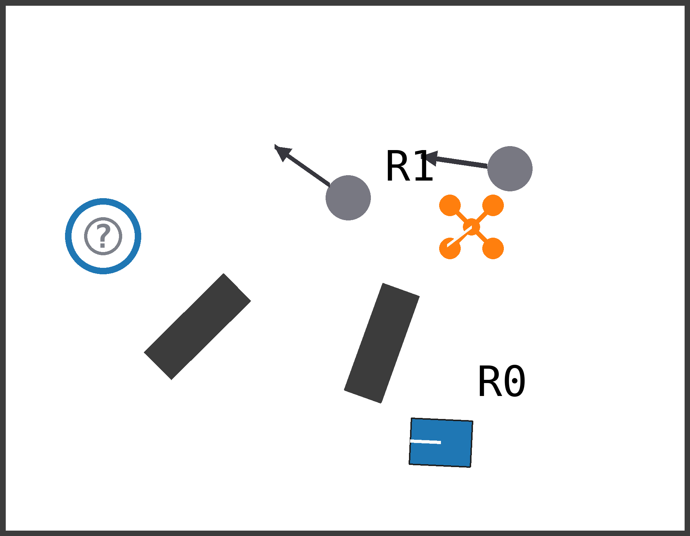
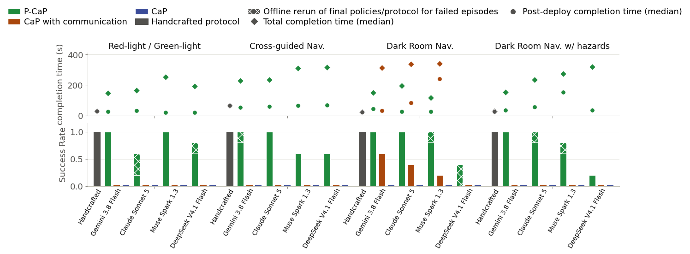
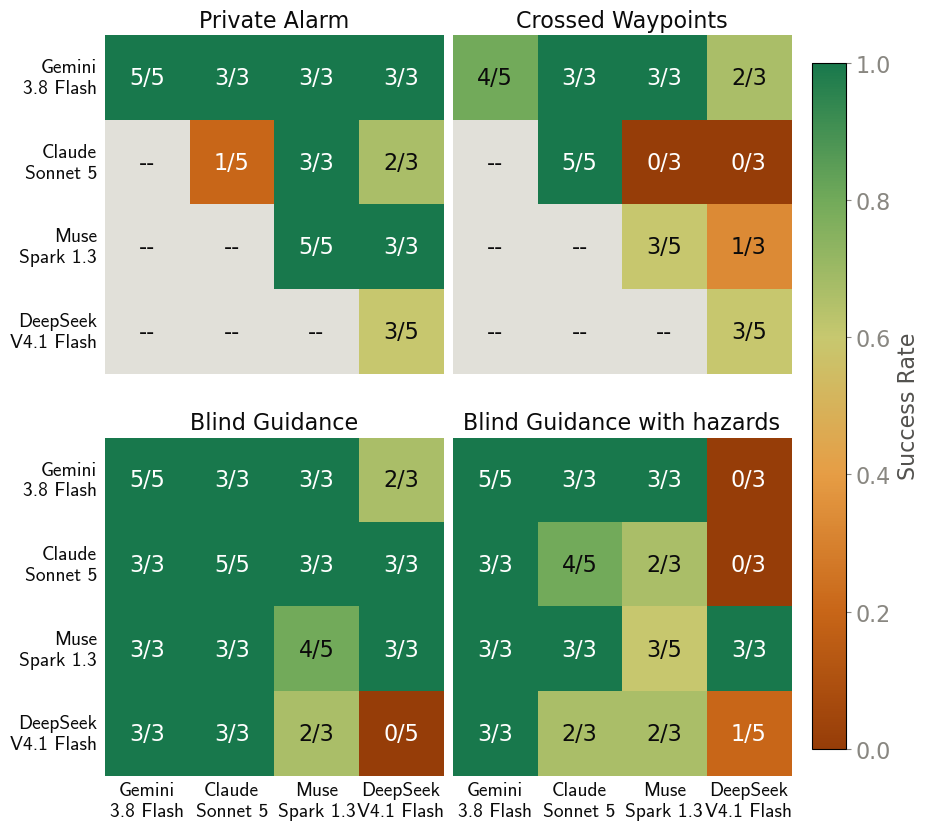

Ad hoc Protocols with Code-as-Policy
for Decentralized Multi-Robot Control
ICRA 2027 submission
Video
Abstract
Robots deployed in the wild will often need to collaborate with robots they have never encountered before. Successful coordination may require going beyond high-level planning to establishing coupled low-level control to overcome partial observability, information asymmetry, or heterogeneity, all while staying safe and robust to asynchronous and dynamic deployment conditions. To address this, we present Protocols with Code-as-Policy (P-CaP). P-CaP enables robots to develop and deploy ad hoc communication protocols according to task demands, achieving coordinated control while remaining fully decentralized. Each robot relies on an LLM that first negotiates the message schema and content with its peers in natural language. Then, each robot implements its side of the agreed protocol directly in its control code. Once deployed, policies and protocols run inside each individual robot’s control loop, decoupled from the LLM, which keeps reasoning, renegotiating, and redeploying code as the task unfolds. We evaluate P-CaP on four asynchronous coordination tasks that involve private information and complementary sensing under partial observability. P-CaP matches or outperforms language-only and communication-free baselines on every task, solves time-critical situations, completes tasks faster than language-only coordination, and exhibits good performance when teams mix robots driven by different LLMs.
Protocols with Code-as-Policy
P-CaP separates the slow process of negotiating a protocol from the fast control loop that executes it. The robots independently write and deploy their side of the shared protocol, then can revise it as the episode unfolds.

Four coordination tasks
The tasks isolate private information and complementary sensing under partial observability.




Interactive episodes
Loading episode trace…
Controller channel
Results
Success rates and completion time

Crossplay
